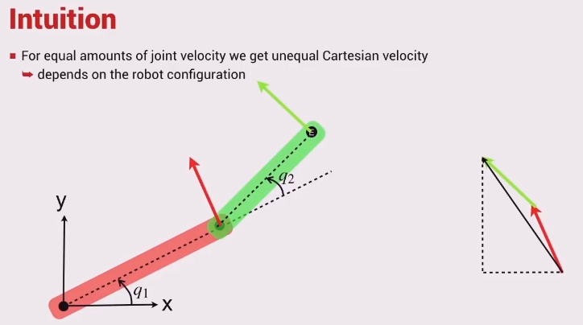

The velocity ellipse describes the ease in which the robot arm may move in either direction.
A narrow ellipse means the robot is close to a singularity.
It can be described by the equation \[\nu^T (\mathbf{J}(\mathbf{q})\mathbf{J}^T(\mathbf{q}))^{-1} \nu = 1\] Where \[\nu=(\dot{x},\dot{y})\] and \[\mathbf{\dot{q}}=(\dot{q_1},\dot{q_2})\] \[\mathbf{\dot{q}}=\mathbf{J}(\mathbf{q})^{-1}\nu\]

Moving faster in the y direction than x.